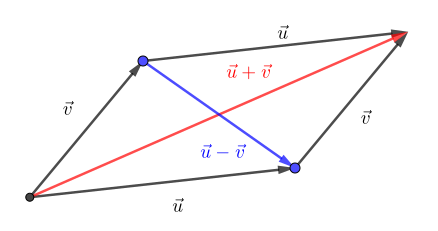
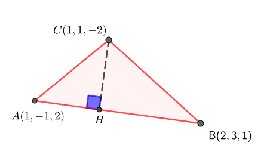

Dans la section 1.1, on a défini le concept d’angle polaire pour un vecteur de \(\R^2\text{,}\) et, plus généralement, le concept de cosinus directeurs. Pour l’angle polaire, on peut imaginer que c’est l’angle que fait le vecteur \(\vec{u}\) avec tout vecteur de la forme \((x,0)\) où \(x>0\text{.}\)
Dans cette section, on vise à définir le concept d’angle entre deux vecteurs quelconques dans \(\R^2\) et \(\R^3\text{.}\) Ceci nous mènera à la définition du produit scalaire, une opération vectorielle qui a de nombreuses applications.
Sous-section1.2.1L’angle entre deux vecteurs de dimensions deux
Considérons deux vecteurs non nuls \(\vec{u}\) et \(\vec{v}\) de \(\R^2\) et dénotons par \(\theta_{\vec{u}\vec{v}}\) le plus petit angle entre ces vecteurs 1
S’il n’y a pas d’ambigüité et que le contexte est clair, on laissera tomber l’indice \(\vec{u}\vec{v}\) au profit de seulement \(\theta\text{.}\)
. On cherche à trouver un moyen de déterminer cet angle à partir des vecteurs \(\vec{u}\) et \(\vec{v}\text{.}\) L’image interactive 1.2.2 permet de manipuler des vecteurs et de découvrir l’intuition derrière la formule qui suivra.
Exemple1.2.1.L’angle entre deux vecteurs de dimensions deux: dynamique.
L’angle entre deux vecteurs peut être obtenu à l’aide d’un résultat bien connu à propos des triangles.
Instructions.
Instruction pour la figure interactive: il est possible de déplacer les vecteurs \(\vec{u},\vec{v}\text{.}\) Une fois que l’on a trouvé une configuration satisfaisante, un clic sur la boite fera apparaitre une question. La bonne réponse à cette question dévoilera comment trouver l’angle entre les vecteurs.
Figure1.2.2.L’angle entre deux vecteurs
Algébriquement, on peut développer le numérateur de la formule obtenue pour simplifier. Il est bon de rappeler que le vecteur \(\vec{w}=\vec{u}-\vec{v}\text{,}\) voir la figure 1.1.26. On a donc
De cette équation, on peut tirer quelques remarques. On peut, dans un premier temps, vérifier que si \(\vec{u}\) et \(\vec{v}\) sont parallèles, alors l’angle \(\theta\) sera \(0\) ou \(\pi\) (\(0^\circ\) ou \(180^\circ\)). En effet, si \(\vec{v}=k\vec{u}\text{,}\) on a
Comme le cosinus donne \(1\) ou \(-1\text{,}\) on conclut que l’angle doit être de \(0\) ou \(\pi\text{.}\)
Une autre valeur particulière pour l’angle est \(\theta=\frac{\pi}{2}\) (\(90^\circ\)). Ceci correspond à des vecteurs qui sont perpendiculaires. Puisque \(\cos\pfrac{\pi}{2}=0\text{,}\) on conclut que \(u_1v_1+u_2v_2=0\) lorsque deux vecteurs sont perpendiculaires.
Exemple1.2.3.Un calcul d’angle.
On considère les vecteurs \(\vec{u}=(1,2)\) et \(\vec{v}=(-3,4)\text{.}\) Le cosinus de l’angle entre ces vecteurs est
L’angle entre les vecteurs est donc \(\theta=\arccos\pfrac{1}{\sqrt{5}}\approx 1.11\) radians ou encore \(63.43\) degrés.
La situation dans \(\R^3\) est similaire. Puisque deux vecteurs non nuls peuvent toujours être vus comme étant sur un plan ou sur une droite (s’ils sont parallèles), un argument similaire permet d’obtenir l’équation suivante pour l’angle entre des vecteurs \(\vec{u},\vec{v}\in\R^3\text{:}\)
À voir ces deux équations, on peut remarquer que l’addition du produit des composantes correspondantes de deux vecteurs semble être une quantité importante. Elle sera définie dans la sous-section 1.2.2.
Sous-section1.2.2Le produit scalaire
Motivé par les calculs de la sous-section 1.2.1, on définit algébriquement le produit scalaire pour ensuite regarder ses propriétés autant algébriques que géométriques.
Définition1.2.4.Le produit scalaire.
Soit \(\vec{u},\vec{v}\) deux vecteurs de \(\R^2\) ou \(\R^3\text{.}\) On définit le produit scalaire de ces vecteurs, noté \(\vec{u}\cdot \vec{v}\text{,}\) comme étant la somme du produit des composantes correspondantes, c’est-à-dire
Le produit scalaire, comme son nom l’indique, donne un nombre réel (un scalaire), et non un vecteur. En reprenant l’équation pour l’angle entre deux vecteurs, on peut écrire
Comme les normes sont toujours positives et que le cosinus varie entre \(-1\) et \(1\text{,}\) le produit scalaire peut être positif ou négatif, selon l’angle, et de n’importe quelle grandeur, selon les normes.
On a déjà observé que, si l’angle entre deux vecteurs est \(90^\circ\text{,}\) le produit scalaire vaut \(0\text{.}\) Le signe du produit scalaire correspond alors au type d’angle (aigu ou obtus) qu’il y a entre les deux vecteurs.
Voici maintenant quelques propriétés du produit scalaire.
Proposition1.2.5.
Le produit scalaire entre deux vecteurs quelconques possède les propriétés suivantes:
Liste1.2.6.Les propriétés du produit scalaire
\(\vec{u}\cdot\vec{v}=\vec{v}\cdot\vec{u}\) (commutativité du produit scalaire)
\((c\vec{u})\cdot \vec{v}=\vec{u}\cdot (c\vec{v})=c(\vec{u}\cdot\vec{v})\) pour tout \(c\in\R\text{.}\)
\(\vec{u}\cdot(\vec{v}+\vec{w})=\vec{u}\cdot\vec{v}+\vec{u}\cdot\vec{w}\) (distributivité du produit scalaire)
La plupart de ces propriétés découlent directement des propriétés de l’addition et de la multiplication de nombres réels. Par exemple, pour deux vecteurs de \(\R^2\text{,}\) on a
\begin{align*}
\pscal{u}{v}&= u_1v_1+u_2v_2 &\\
&= v_1u_1+v_2u_2 & \text{ commutativité de l'addition de nombres réels}\\
&= \pscal{v}{u}\text{.}
\end{align*}
À remarquer que la propriété 1.2.6:1 donne l’analogue à droite \((\vec{v}+\vec{w})\cdot\vec{u}\) de la propriété 1.2.6:3.
Géométriquement, l’équation (1.2.3) permet aussi de voir que la propriété est toujours valide étant donné que \(\theta_{\vec{u}\vec{v}}=\theta_{\vec{v}\vec{u}}\text{.}\)
La seconde propriété est aussi algébriquement simple à démontrer. Il est toutefois intéressant de constater l’effet géométrique de la multiplication par un scalaire d’un vecteur sur le produit scalaire. Dans un premier temps, si \(c>0\text{,}\) on a
\begin{align*}
(c\vec{u})\cdot \vec{v}&= \norm{c\vec{u}}\norm{\vec{v}}\cos(\theta_{c\vec{u}\vec{v}})&&\\
&=c\norm{\vec{u}}\norm{\vec{v}}\cos(\theta_{\vec{u}\vec{v}})&&\text{ car l'angle entre } c\vec{u} \text{ et }\vec{v} \text{ est aussi } \theta_{\vec{u}\vec{v}}\text{.}
\end{align*}
Et si \(c<0\text{,}\) alors
\begin{align*}
(c\vec{u})\cdot \vec{v}&= \norm{c\vec{u}}\norm{\vec{v}}\cos(\theta_{c\vec{u}\vec{v}})&&\\
&=\abs{c}\norm{\vec{u}}\norm{\vec{v}}\cos(\theta_{-\vec{u}\vec{v}})&&\text{ car l'angle entre } c\vec{u} \text{ et }\vec{v} \text{ est équivalent } \theta_{-\vec{u}\vec{v}}\\
&=\abs{c}\norm{\vec{u}}\norm{\vec{v}}\cos(180-\theta_{\vec{u}\vec{v}})&& \text{ voir l'image } \knowl{./knowl/xref/fig-anglemuv.html}{\text{1.2.7}}\\
&=-\abs{c}\norm{\vec{u}}\norm{\vec{v}}\cos(\theta_{\vec{u}\vec{v}}) && \text{ car } \cos(180-\theta)=-\cos(\theta)\\
&=c\norm{\vec{u}}\norm{\vec{v}}\cos(\theta_{\vec{u}\vec{v}}) && \text{ car } -\abs{c}=c \text{ si } c<0\text{.}
\end{align*}
Instructions.
On peut déplacer les vecteurs pour constater que l’angle entre \(-\vec{u}\) et \(\vec{v}\) est toujours égal à \(180-\theta_{\vec{u}\vec{v}}\text{.}\)
Figure1.2.7.L’angle entre les vecteurs \(-\vec{u}\) et \(\vec{v}\text{.}\)
Finalement, le cas \(c=0\) découle simplement du fait que \(c\vec{u}=\vec{0}\text{.}\)
La troisième propriété n’est qu’une simple manipulation algébrique. Dans le cas de vecteurs dans \(\R^2\text{,}\) on a
Les vecteurs perpendiculaires seront d’une grande importance. Deux vecteurs perpendiculaires sont aussi dits orthogonaux.
Exemple1.2.8.Les diagonales d’un losange.
On sait que deux vecteurs non parallèles engendrent un parallélogramme. Dans l’exercice 1.1.4.10, on peut montrer que les diagonales se coupent en leur milieu. Lorsque les deux vecteurs ont la même longueur, on obtient en fait un losange. On montre algébriquement que les diagonales d’un losange se coupent à angle droit. La figure interactive 1.2.9 permet de manipuler un losange et servira de support pour la preuve qui suit.
Figure1.2.9.Les diagonales d’un losange
Pour commencer, il est utile de se fixer un repère. En cliquant sur la case "repère", on choisit de fixer l’origine à l’un des quatre sommets du losange et de nommer les autres sommets \(A,B\) et \(C\text{.}\) On veut montrer que \(\vecl{OC}\) est perpendiculaire à \(\vecl{BA}\) ou, de manière équivalente, que \(\pscal{OC}{BA}=0\text{.}\) On a comme hypothèse que \(\|\vecl{OA}\|=\|\vecl{OB}\|\) et donc que les quatre côtés sont égaux. En réécrivant les diagonales comme étant respectivement la somme et la différence des vecteurs \(\vecl{OA},\vecl{OB}\text{,}\) on a
Ainsi, les diagonales sont perpendiculaires, car le produit scalaire donne \(0\text{.}\)
Dans l’exercice 1.2.4.6, on montre que, similairement à la somme de nombres réels, le carré de la norme d’une somme introduit un facteur croisé dans la réponse:
On peut aussi borner les valeurs possibles du produit scalaire. On appelle l’inégalité de Cauchy-Schwarz la proposition qui suit. On donne plusieurs démonstrations de cette proposition, afin de montrer qu’il peut souvent y avoir plusieurs manières d’arriver à une solution à un problème.
l’inégalité découlant du fait que \(\abs{\cos(\theta)}\leq 1\text{.}\)
Démonstration.
Une autre manière est de procéder avec une combinaison d’arguments géométriques et algébriques. On remarque que si l’un des vecteurs est \(\vec{0}\text{,}\) alors l’inégalité est vraie, car \(\pscal{u}{v}=0\) et \(\norm{\vec{u}}\norm{\vec{v}}=0\text{.}\)
On suppose donc que les vecteurs sont non nuls. En ayant en tête l’image du parallélogramme engendré par les vecteurs et ses diagonales, reproduite à la figure 1.2.11, on constate que

Figure1.2.11.Le parallélogramme engendré par les vecteurs, et ses diagonales
On regarde ce qui se passe dans un premier temps avec les vecteurs unitaires \(\hat{u}=\frac{\vec{u}}{\norm{\vec{u}}}\) et \(\hat{v}=\frac{\vec{v}}{\norm{\vec{v}}}\text{.}\) On s’intéresse aux longueurs des diagonales du parallélogramme engendré par ces vecteurs unitaires. On a
Voir l’exercice [provisional cross-reference: exo-ineqCSpara] pour une preuve utilisant les zéros d’une parabole.
Le produit scalaire est utilisé dans beaucoup de domaines et contextes différents. En physique, il permet de calculer le travail effectué par une force. Dans un contexte administratif, par exemple une école, le produit scalaire peut être utilisé pour calculer la note d’un étudiant dans un cours. Si ses résultats aux évaluations sont par exemple de \(R=(80,75,85)\) et que la pondération des évaluations est \(P=(0.3,0.3,0.4)\text{,}\) alors la note de l’étudiant sera \(80*0.3+75*0.3+85*0.4=80.5\text{,}\) qui n’est rien d’autre que le produit scalaire entre \(R\) et \(P\text{.}\)
Une fois que l’on comprend que le produit scalaire n’est qu’une somme de produits, les possibilités sont illimitées.
On termine avec des commandes Sage en lien avec la sous-section.
Calcul1.2.12.Le produit scalaire avec Sage.
Il est possible de calculer le produit scalaire entre \(\vec{u}\) et \(\vec{v}\) avec la commande u.dot_product(v). Il est également possible d’utiliser plus simplement u*v.
Pour calculer l’angle entre deux vecteurs, on utilise la formule (1.2.3).
Sous-section1.2.3La projection orthogonale
Considérons deux vecteurs non nuls \(\vec{u},\vec{v}\) et considérons la droite de même direction que \(\vec{u}\text{.}\) On aimerait trouver le point sur cette droite qui est le plus près de l’extrémité de \(\vec{v}\text{.}\) L’intuition nous dit qu’il faut aller vers \(\vec{u}\) en partant de \(\vec{v}\text{,}\) dans une direction perpendiculaire à \(\vec{u}\text{.}\) On crée de cette façon un vecteur parallèle à \(\vec{u}\text{.}\) On cherche à déterminer mathématiquement ce vecteur, noté \(\vec{v}_{\vec{u}}\text{.}\)
Instructions.
Il est possible de déplacer les vecteurs \(\vec{u},\vec{v}\text{.}\) Le vecteur rouge donne la position du point sur \(\vec{u}\) qui est le plus près de \(\vec{v}\text{.}\)
Figure1.2.13.La projection orthogonale
Par définition, le vecteur allant de \(\vec{v}_{\vec{u}}\) à l’extrémité de \(\vec{v}\) est perpendiculaire à \(\vec{u}\text{.}\) Ce vecteur n’est rien d’autre que \(\vec{v}-\vec{v}_{\vec{u}}\text{.}\) De plus, le vecteur \(\vec{v}_{\vec{u}}\) étant parallèle à \(\vec{u}\) (\(\vec{v}_{\vec{u}}=c\vec{u}\)), il est possible de déterminer le bon scalaire \(c\text{:}\)
En réarrangeant la dernière égalité, on obtient le scalaire \(c\) menant à la définition mathématique du vecteur \(\vec{v}_{\vec{u}}\text{:}\)
Définition1.2.14.La projection orthogonale.
Soit deux vecteurs non nuls \(\vec{u},\vec{v}\text{.}\) La projection de \(\vec{v}\) sur \(\vec{u}\text{,}\) notée \(\vec{v}_{\vec{u}}\text{,}\) est l’unique vecteur pour lequel
\(\vec{v}_{\vec{u}}\) est parallèle à \(\vec{u}\text{;}\)
\(\vec{v}-\vec{v}_{\vec{u}}\) est perpendiculaire à \(\vec{u}\text{.}\)
Si l’un des vecteurs est nul, on définit \(\vec{v}_{\vec{u}}=\vec{0}\text{.}\)
La projection orthogonale est donnée par la formule suivante :
Algébriquement, on voit que si les vecteurs \(\vec{u}\) et \(\vec{v}\) sont perpendiculaires, la projection sera nulle. La figure interactive 1.2.13 permet aussi de voir géométriquement cet aspect.
Exemple1.2.15.Le pied de la hauteur.
Un triangle est formé des points \(A(1,-1,2),B(2,3,1)\) et \(C(1,1,-2)\text{.}\) On cherche les coordonnées du point \(H\) correspondant au pied de la hauteur issue de \(C\text{.}\)
Solution.
On trace le triangle dans un repère quelconque.

Figure1.2.16.Le pied de la hauteur
Le point cherché \(H\) peut être obtenu en additionnant au point \(A\) le vecteur correspondant à la projection de \(\vecl{AC}\) sur \(\vecl{AB}\text{,}\) ou de manière équivalente en ajoutant à \(B\) le vecteur correspondant à la projection de \(\vecl{BC}\) sur \(\vecl{BA}\text{.}\) On choisit la première option:
La notion de projection orthogonale, donnée par la formule (1.2.5).
De plus, avec Sage, on peut utiliser l’opération * sur deux vecteurs pour avoir le produit scalaire. Les opérations algébriques usuelles permettent de calculer l’angle entre deux vecteurs ou la projection orthogonale.
Exercices1.2.4Exercices
1.
Pour chacune des paires de vecteurs suivantes, calculer le produit scalaire ainsi que l’angle entre les vecteurs.
(a)
\(\vec{u}=(\sqrt{3},1), \vec{v}=(5,0)\)
Réponse.
\(\pscal{u}{v}=5\sqrt{3}\) et \(\theta=30^\circ=\frac{\pi}{6}\)
Soit deux vecteurs \(\vec{u}\) et \(\vec{v}\) et \(c\in\R\text{.}\) Simplifier les expressions suivantes en vous servant des propriétés de la proposition 1.2.5. Dire si la réponse est un scalaire ou un vecteur.
C’est un vecteur. En effet, on a une constante \(c\) multipliée par une norme additionnée d’un produit scalaire. Tout cela ensemble est un scalaire. On le multiplie ensuite par le vecteur \(\vec{v}\) (multiplication par un scalaire) et le résultat est donc un vecteur.
4.
Soit \(\vec{u}=(u_1,u_2,u_3)\) et \(\vec{v}=(v_1,v_2,v_3)\in\R^3\text{.}\) Utiliser la loi des cosinus afin de démontrer l’équation (1.2.2). Il faudra exprimer la loi en termes des normes des vecteurs \(\vec{u}\text{,}\)\(\vec{v}\) et du vecteur \(\vec{w}=\vec{u}-\vec{v}\) avec \(\theta\) représentant l’angle entre les deux vecteurs.
Démontrer la propriété 1.2.6:3 (distributivité du produit scalaire) en utilisant la définition géométrique du produit scalaire (1.2.3). Utiliser les symboles fournis par le dessin pour les angles entre les différents vecteurs.
Soit deux vecteurs \(\vec{u}, \vec{v} \in \R^2\) ou \(\R^3\text{.}\) En utilisant les propriétés de la proposition 1.2.5, démontrer l’égalité suivante:
Comme pour beaucoup de preuves d’énoncés sous forme d’égalités, il faut commencer par réécrire le membre de l’égalité qui nous semble le plus compliqué. On suggère de commencer par celui de gauche, bien que celui de droite serait tout aussi simple dans ce cas.
Solution.
Tel que mentionné dans l’indication, on choisit de partir du membre de gauche pour se rendre au membre de gauche de l’égalité.
Soit deux vecteurs \(\vec{u}\) et \(\vec{v}\text{.}\) Démontrer algébriquement les deux énoncés suivants en vous servant des propriétés de la proposition 1.2.5.
À l’aide de vecteurs, calculer l’angle entre la plus longue diagonale d’un cube et la diagonale adjacente d’une de ses faces, tel que représenté dans la figure.
Instructions.
Figure1.2.19.
Indice.
Considérer l’origine des deux diagonales comme l’origine d’un espace cartésien. Créer des vecteurs en considérant que la longueur du côté du cube est de \(c\text{.}\)
Réponse.
L’angle entre les diagonales est \(\theta=\arccos\pfrac{2}{\sqrt{6}}\approx 0.6155\) radians ou encore \(35.3\) degrés.
Solution.
Considérant l’origine des deux diagonales comme l’origine d’un espace cartésien et la longueur du côté du cube égale à \(c\text{,}\) les vecteurs créés ont pour composantes respectivement \(\vec{u}=(c,c,0)\) et \(\vec{v}=(c,c,c)\text{.}\) L’angle désiré devient tout simplement l’angle entre ces deux vecteurs. On le calcule comme à l’exemple 1.2.3
L’angle entre les vecteurs et donc entre les diagonales est alors \(\theta=\arccos\pfrac{2}{\sqrt{6}}\approx 0.6155\) radians ou encore \(35.3\) degrés. De plus, on constate que cet angle ne dépend pas de la longueur du côté du cube.
9.
Une molécule de méthane a quatre atomes d’hydrogène aux points indiqués sur la figure ci-dessous et un atome de carbone à l’origine. Trouver l’angle du lien H-C-H.
Instructions.
Figure1.2.20.Une molécule de méthane
Réponse.
L’angle du lien H-C-H est \(\theta=\arccos\pfrac{-1}{3}\approx 1.9106\) radians ou encore \(109.5\) degrés.
Solution.
On calcule l’angle illustré en vert dans la figure. Il s’agit de l’angle entre les vecteurs \(\vecl{CH_2}\) et \(\vecl{CH_4}\text{.}\) Les composantes de ces vecteurs sont données directement par les coordonnées des points \(H_2\) et \(H_4\) puisque le point \(C\) est l’origine. Ainsi, \(\vecl{CH_2}=(-1,1,-1)\) et \(\vecl{CH_4}=(1,1,1)\text{.}\)
L’angle entre les vecteurs et donc l’angle du lien H-C-H est \(\theta=\arccos\pfrac{-1}{3}\approx 1.9106\) radians ou encore \(109.5\) degrés.
10.
L’orientation d’un vecteur de \(\R^2\) est complètement déterminée par l’angle que fait le vecteur avec l’horizontale. Dans \(\R^3\text{,}\) un angle ne suffit plus. Il est toutefois possible de caractériser l’orientation à l’aide de trois angles.
Soit \(\vec{u}\) un vecteur non nul. On note \(\alpha\) l’angle que fait le vecteur \(\vec{u}\) avec l’axe des abscisses \((x)\text{,}\)\(\beta\) l’angle que fait le vecteur \(\vec{u}\) avec l’axe des ordonnées \((y)\) et \(\phi\) l’angle que fait le vecteur \(\vec{u}\) avec l’axe des cotes \((z)\text{.}\)
Instructions.
Figure1.2.21.
Démontrer les affirmations suivantes:
(a)
Le vecteur \(\vec{u}\in \mathbb{R}^3\) s’écrit comme \(\vec{u}=\norm{\vec{u}}(\cos(\alpha),\cos(\beta),\cos(\phi))\text{.}\) On appelle le triplet \((\cos(\alpha),\cos(\beta),\cos(\phi))\) les cosinus directeurs du vecteur \(\vec{u}\text{.}\)
Solution.
En regardant la figure interactive, on voit qu’il y a un triangle rectangle formé par chaque axe dont l’hypoténuse est le vecteur et une cathète correspond à la coordonnée dans cet axe. Par exemple, on voit que le vecteur \(\vec{u}=(u_1, u_2, u_3)\) forme un angle de \(\alpha\) avec l’axe des \(x\text{.}\) On peut donc déterminer avec la trigonométrie du triangle rectangle que le côté adjacent à l’angle \(\alpha\) est donné par l’hypoténuse multiplié par le cosinus de l’angle. Ainsi,
Une autre approche serait d’utiliser la définition géométrique du produit scalaire donnée par l’équation (1.2.3). En effet, en prenant le produit scalaire du vecteur \(\vec{u}\) avec chaque vecteur unitaire dans la direction des axes, on obtient:
Dans \(\mathbb{R}^2\text{,}\) la notion de cosinus directeurs existe aussi et un vecteur \(\vec{v}\in\mathbb{R}^2\) s’écrit aussi \(\vec{v}=\norm{\vec{v}}(\cos(\theta),\cos(\alpha))\text{.}\)
Solution.
La solution sera virtuellement la même qu’en \((a)\text{,}\) mais avec les angles \(\theta\) et \(\alpha\text{,}\) respectivement l’angle formé par le vecteur \(\vec{u}\) et les axes des abscisses et l’angle formé par le vecteur \(\vec{u}\) et l’axe des ordonnées.
On pourrait également avoir une solution alternative en utilisant le produit scalaire dans sa définition géométrique.
Remarquer également que cet exercice rappelle l’équation (1.1.2) qu’on peut obtenir en considérant que \(\alpha = \frac{\pi}{2}-\theta\text{,}\) car ce sont des angles complémentaires. Une identité trigonométrique complètera la preuve.
(d)
Montrer qu’un vecteur non nul \(\vec{u}\) de \(\R^3\) peut s’écrire sous la forme \(\vec{u}=\norm{\vec{u}}(\cos(\theta)\sin(\phi),\sin(\theta)\sin(\phi),\cos(\phi))\) où \(\theta,\phi\) sont deux angles (remarquer le parallèle avec \(\R^2\) où seul \(\theta\) était nécessaire dans la forme polaire).
Solution.
Il s’agit des coordonnées sphériques illustrées dans la figure interactive. Suivant le raisonnement de la dernière remarque du \((c)\text{,}\) on peut écrire un vecteur de \(\R^2\) ainsi:
On voit également, en comparant les figures des cosinus directeurs et des coordonnées sphériques, que la coordonnée en \(z\) ne changera pas et dépendra uniquement de l’angle \(\phi\) entre le vecteur et l’axe des \(z\text{.}\)
La démonstration se fera en considérant la projection du vecteur sur le plan \(XOY\text{.}\) Ce côté correspond à l’autre cathète du triangle formé par l’angle \(\phi\) dans la figure. Par la trigonométrie du triangle rectangle, sa longueur est donc donnée par \(\norm{\vec{u}}\sin(\phi)\text{.}\) En regardant maintenant le triangle orange, cette longueur est l’hypoténuse. Il s’ensuit donc que les deux cathètes sont données en multipliant par le cosinus ou le sinus de l’angle \(\theta\text{.}\) Ainsi,
On a donc écrit le vecteur seulement en termes de sa longueur et de deux angles, en coordonnées sphériques.
11.
Dans la figure 1.2.13, on peut comprendre, en déplaçant les vecteurs, que la projection orthogonale d’un vecteur sur un autre vecteur perpendiculaire donne le vecteur nul. Montrer cela algébriquement pour deux vecteurs orthogonaux \(\vec{u}\) et \(\vec{v}\text{.}\)
Indice.
Puisque ces deux vecteurs sont orthogonaux, on sait déjà que leur produit scalaire est nul. La preuve sera immédiate en utilisant la formule (1.2.5).
Solution.
Soit \(\vec{u}\) et \(\vec{v}\text{,}\) deux vecteurs orthogonaux. Alors, la projection de \(\vec{u}\) sur \(\vec{v}\) est donnée par:
\begin{align*}
\vec{u}_{\vec{v}}&=\frac{\vec{u}\cdot\vec{v}}{\vec{v}\cdot\vec{v}}\vec{v}\\
&=\frac{0}{\vec{v}\cdot\vec{v}}\vec{v}&& \text{(car les deux vecteurs sont orthogonaux)}\\
&=0\vec{v}\\
&=\vec{0} &&\text{(tel que la multiplication par un scalaire nul est définie)}
\end{align*}
12.
Dans l’exemple 1.2.8, nous avons démontré que les diagonales d’un losange se coupent à angle droit. Utiliser la figure 1.2.9 pour vous aider à bien visualiser l’énoncé suivant, puis le montrer algébriquement à l’aide des propriétés de la proposition 1.2.5:
« Les diagonales d’un losange sont de même longueur si et seulement si ce losange est un carré. »
Indice.
Pour structurer une preuve de ce type (équivalence), il est possible de montrer l’énoncé en deux étapes. Dans ce cas-ci, il est conseillé de procéder en développant l’expression de la norme au carré des deux diagonales exprimées comme l’addition et la soustraction des vecteurs formant le losange. On verra alors que ces deux expressions seront égales si et seulement si le produit scalaire des deux vecteurs est nul.
Solution.
Comme suggéré dans l’indication, on développe l’expression de la norme au carré des deux diagonales exprimées comme l’addition et la soustraction des vecteurs formant le losange. Rappelons que, par la définition d’un losange, on sait que \(\vecl{OA}=\vecl{BC}\) et \(\vecl{OB}=\vecl{AC}\text{.}\) On va donc utiliser seulement les vecteurs partant de l’origine à partir de la quatrième ligne.
Le produit scalaire des deux vecteurs formant le losange étant nul, ils doivent être à angle droit. C’est donc un carré.
13.
Pour décrire tout mouvement circulaire ou même toute trajectoire courbe, on dessine le vecteur vitesse (instantanée) \(\vec{v}\) et le vecteur accélération \(\vec{a}\) qui agit sur un mobile pour occasionner son changement de direction. Dans un mouvement circulaire, ce vecteur accélération est constant. Dans la figure ci-dessous, on observe qu’il est possible de décomposer le vecteur \(\vec{a}\) en sa composante radiale (\(\vec{a}_r\)) et sa composante tangentielle (\(\vec{a}_t\)). Cette dernière est calculable en faisant la projection de \(\vec{a}\) sur \(\vec{v}\text{.}\) Les deux composantes sont alors perpendiculaires.
En utilisant cela et la définition de la projection orthogonale (1.2.5), déterminer l’accélération tangentielle et l’accélération radiale d’une particule en mouvement, au moment où sa vitesse est donnée par le vecteur \(\vec{v}=(1,2,-2)\) et son accélération est \(\vec{a}=(3,2,4)\text{.}\)
Instructions.
Figure1.2.22.
Réponse.
\(\vec{a}_t=\left(\frac{-1}{9},\frac{-2}{9},\frac{2}{9}\right)\) et \(\vec{a}_r=\left(\frac{28}{9},\frac{20}{9},\frac{34}{9}\right)\)
Solution.
On sait que \(\vec{a}_t=\vec{a}_{\vec{v}}\text{.}\)
Les exercices qui suivent sont conçus pour être résolus avec Sage. Des cellules vides sont disponibles pour écrire les réponses. Évidemment, il y a plusieurs manières d’arriver aux réponses.
14.
Considérer les vecteurs \(\vec{u}=(-1,2,4),\vec{v}=(2,4,-1)\) et \(\vec{w}=(5,-3,2)\text{.}\) Calculer
\(\displaystyle \vec{u}\cdot \vec{v}\)
\(\displaystyle \vec{u}\cdot \vec{w}\)
L’angle entre \(\vec{u}\) et \(\vec{v}\)
L’angle entre \(\vec{v}\) et \(\vec{w}\)
La projection orthogonale du vecteur \(\vec{v}\) sur le vecteur \(\vec{u}\text{.}\)
Bloc de code1.2.23.Le code solution pour l’exercice
15.Automatisation du calcul de l’angle entre deux vecteurs.
Le but de cet exercice est de créer une fonction Sage qui, étant donné deux vecteurs \(\vec{u},\vec{v}\in\R^n\text{,}\) va calculer l’angle entre les vecteurs \(\vec{v}\) sur \(\vec{u}\text{.}\) Plus précisément, créer une fonction nommée angle_entre_vec qui aura comme arguments deux vecteurs et qui va retourner la valeur de l’angle entre ces vecteurs.
Vérifier la fonction créée avec les données de l’exercice 1.2.4.14.
Le but de cet exercice est de créer une fonction Sage qui, étant donné deux vecteurs \(\vec{u},\vec{v}\in\R^n\text{,}\) va calculer la projection orthogonale de \(\vec{v}\) sur \(\vec{u}\text{.}\) Plus précisément, créer une fonction nommée proj_v_sur_u qui aura comme arguments deux vecteurs et qui va retourner la projection orthogonale du premier vecteur sur le second.